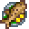

Cooking is a game mechanic that becomes available after upgrading the farmhouse for the first time. The house upgrade adds a kitchen, which includes a stove and a refrigerator. The stove is the cooking interface, while the refrigerator provides 36 slots of storage space, similar to a chest. The refrigerator is unique in that it is directly linked with the cooking interface, as if it were an extension of the player's inventory. Only ingredients in the player's inventory, refrigerator or Mini-Fridge are seen as usable items for a recipe.
Alternatively, after reaching Foraging level 9 the player can use a Cookout Kit to cook anywhere.
The player must learn each recipe before it is unlocked for cooking, with the exception of Fried Egg, which is known by the player upon starting a new save file. Locked recipes are displayed as a black silhouette of the recipe icon, with a tooltip description that says "???." Unlocked recipe icons will appear greyed-out if any of the ingredients are missing, but the tooltip will provide information regarding the recipe. Any missing ingredients will be highlighted in red. If all the ingredients required for a recipe are present either in the player's inventory or the refrigerator (or a combination of the two) the recipe icon will become fully highlighted.
_________________________________________________________________________________________________________________
Fried_Egg

Sunny-side up.
Baked_Fish
Baked fish on a bed of herbs.
Salad

A healthy garden salad.